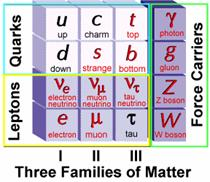
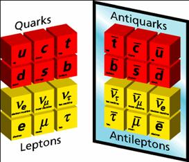
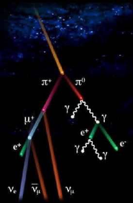

A Brief Introduction to Particle Physics
Particle physics
Quarks
Leptons
Anti-matter
Muons
Origin of Muons
Why Study Muons
Detecting Muons
A Detailed Introduction to Particle Physics
Particle
Adventure
Other Particle Physics Links
General Information
Muon and Cosmic Ray Research
Accelerator Resources
Detector Resources
Lists of Links |
What is particle physics?
Particle
physics is the study of the fundamental particles of the universe,
or, in other words, particle physics is the study of really,
really small stuff. As of right now, we know of 12 fundamental
particles: six quarks and six leptons. (See the particle periodic
table to the right.) This is known as the Standard Model in
the physics world. There are currently hundreds of identified
particles made from combinations of these twelve fundamental
particles and scientists are still finding more.
So now you ask, "What exactly are quarks and leptons?" |
What are quarks?
Quarks are the fundamental building blocks of nature. They
combine to form larger particles, such as protons and neutrons.
There are six different types of quarks: up, down, charm,
strange, top, and bottom. If you look at the table above,
the mass of the particle increases as you go to the right,
meaning the top quark is much heavier than the up quark. Quarks
in the top row have a charge of +2/3 of an electron's charge
(where e = 1.9 x 10-19 C) and quarks in the second row have
a charge of -1/3 of an electron's charge. You may think this
is strange because you were taught that you can't have a fraction
of the charge on an electron. Your instinct is correct: because
of this fractional charge, quarks can not exist independently;
they must combine to form larger particles.
Quarks combine to form most of the matter in the universe.
In fact, most of the matter in the universe is made from just
two quarks: the up and the down. For example, a neutron is
made of two down quarks and one up quark (add the charges,
it makes sense! -1/3e + -1/3e + 2/3e = 0) and a proton is
made of two up quarks and a down quarks (+2/3e + 2/3e -1/3e
= 1e). In general, you need three quarks to make a particle,
so that the charge always adds up to a whole number.
|
What are leptons?
Leptons are the six particles at the bottom of the periodic
table. The bottom row shows the electron, the muon, and the
tau particles. You are probably familiar with the electron;
the muon and the tau are the heavier, less well known cousins
to the electron. The muon and tau are rarer than the electron,
have the same negative charge that the electron has. We'll
talk more about muons below. The top row shows the neutrinos.
There is one neutrino for each of the electron, the muon,
and the tau. Leptons are much lighter than the quarks, in
fact the neutrinos are so light that there is debate whether
they have mass at all!
|
What is anti-matter?
It's
not just science fiction! There actually is something known
as anti-matter is real physics. Every particle we talked about
above, both quarks and leptons, has an anti-particle. The
anti-particle is exactly the same as the particle (i.e. same
mass) but all the properties are opposite. For example, an
up quark has a charge of +2/3, so an anti-up quark would have
a charge of -2/3.
The anti-matter quarks can interact and form new particles
in the same way the quarks do. The difference is that now
you need a quark and an anti-quark to make a particle, instead
of the three quarks like we stated above.
When a particle meets its anti-particle, they annihilate
and release a large amount of energy
|
What is a muon?
A muon is a negatively charged particle, similar to an electron,
but about 200 times heavier. Muons fall into the class of
particles known as leptons.
|
Where do muons come from?
Most
muons come from what are known as cosmic rays. What are cosmic
rays? Cosmic rays are caused by high energy protons from stars
in outer space that interact with the Earth's atmosphere.
Scientists are unsure of the origin of the highest energy
cosmic rays. As they fall toward the earth, they ionize the
atmosphere forming a shower of matter and anti-matter particles.
These particles are known as pions (p) and are made up of
up and down quarks and anti-quarks. You may have never heard
of a pion before and that is because they don't last very
long. They quickly decay into lighter things, such as leptons
and electromagnetic radiation. This is where our muons come
from: they are the results of an interaction between a proton
and the atmosphere that produces a particle that decays into
a muon, among other things. Other leptons, such as electrons
and neutrinos are also emitted, but the muons have a higher
energy so are more likely to make it down to the Earth's surface.
These showers are happening all the time. About 600 particles
pass through your body each minute!
The picture to the left illustrates a cosmic ray shower.
The yellow streak is the proton, the red and purple streaks
are pions and the others are leptons. The white squiggly lines
are electromagnetic radiation, such as photons. In the picture,
you may notice that the muon (µ+) and some of the electrons
(e-, e+) have positive charges. We said about that the muons
and electrons were negatively charged, so the positive charge
indicated that it is the anti-particle. As far as decays are
concerned, the anti-particle behaves the same way as the particle
would.
|
Why study muons?
The simple answer is that we study muons because we can.
Muons from cosmic rays are relatively easy to detect. The
telescopes are portable and can be used in the classroom for
a variety of experiments. By studying the cosmic rays, we
can find how the rate that muons are detected depends on the
weather, direction, or extra-terrestrial events, such as solar
flares. The question to answer in your research project is:
why do these factors affect the muon rate?
|
How can we detect cosmic rays?
Cosmic rays, and muons in particular, are hard to detect
because they are traveling very fast and pass through most
materials without interacting. The trick to detecting them
is to take advantage of the fact that they are charged particles.
When a charged particle passes through a particular substance
it can ionize the surrounding particles and leave a trail.
For example, in a cloud chamber, the air is cooled to the
point that when an atmospheric particle is ionized, it will
cause the air to condense and thus leaves a visible trail.
With the cloud chamber, you can see both muons and electrons,
but to the untrained eye, it is hard to tell the difference.
|
General Information
- The Particle Adventure
is a great introduction to the world of particle physics.
It is easy to navigate and provides information on particle
detection methods, as well as the standard model.
- Reflections
on Matter teaches you particle physics in 10 easy lessons.
- FermiILab is a national
physics lab run under the Department of Energy devoted to
the study of fundamental particles. At Fermilab is the Tevatron,
a proton accelerator four miles in circumference and the
world’s largest particle accelerator. Fermilab was
named for the Italian physicist Enrico Fermi for his work
in groundbreaking particle physics.
- Inquiring
Minds is a list of links to particle physics related
web pages from Fermilab.
- Brookhaven National Lab
is also a part of the Department of Energy. Many things
from physics to chemistry and biology are studied here,
but most interesting to particle physics is the Relativistic
Heavy Ion Collider (RHIC). By colliding gold nuclei, they
can get a look at what the first moments after creation
of the universe may have been like. It was in these moments
after creation that the fundamental particles were formed.
- The Laboratory For
Elementary Particle Physics (LEPP) at Cornell University
is a research center for both experimental and theoretical
particle physics and accelerator physics. Their facilities
include an electron-positron accelerator (CESR). The CLEO
detector is primarily used in studying bottom and charm
quarks.
- CERN is the world’s
largest particle physics research facility located in Switzerland.
CERN also has a program in which high school physics teachers
can do experimental research in particle physics. The website
also has many good resources for teachers.
- The PARTICLE Program at the University
of Rochester is a program designed to educated teachers
in the field of particle physics and provide them the opportunity
to do experimental research with their students.
- Acronyms
of High-Energy Physics is a guide to keep you from getting
confused with all these letters swarming around.
- A
Bedtime Primer on Physics for Children and Adults Alike.
This is an entertaining tale of particle physics. The links
inside the story are also informative and amusing.
- European
Particle Physics Outreach Group gives a good introduction
to particle physics and the wider research community. It
has a fantastic collection of links to other resources.
- Smalest
Particles, Biggest Machine is a power point presentation
of the basics of particle physics.
- High
Energy Physics Made Painless
|
Muon and Cosmic Ray Research
- PARTICLE Teachers’
research pages. Muon research being done at high schools
through the PARTICLE Program at the University of Rochester.
- Adelaide
Muon Monitor data is available from the University of
Adelaide going back to July 2003. Also, some background
information on muons and cosmic rays.
- Stanford
Linear Accelerator (SLAC) has a cosmic ray detector
with pictures of the equipment and data posted online.
- Astronomical
Links provided by Rob Penna at the University of Rochester.
This is the page used in the workshop with Rob and Alice
Quillen during the Summer Institute. The links include places
to get astronomical and weather data, as well as data from
other muon telescopes.
- Quarknet
Online Cosmic Ray Detector has archived data and tutorials
to help with analysis.
- Cosmic
Ray Observation Program (CROP) involves high school
student in Nebraska studying cosmic rays.
- Pierre Auger Observatory
in Argentina studies high energy cosmic rays.
- WALTA
is a Washington state based high energy cosmic ray investigation
program for middle and high school students. WALTA is a
part of Quarknet.
- New York Schools
Cosmic Particle Telescope is a project to expose students
to real scientific research
|
Accelerator Resources
- Event
Simulator shows what happens when a Z boson decays.
This is a nice interactive java applet.
- The FermiLab Accelerator
Chain is a collection of accelerators that make up Fermilab.
- Particle
Accelerator is a game that shows how the magnetic field
reverses to accelerate a particle.
- The
World of Beams explains in simple language what a beam
is and why it is useful. This page is sponsored by the Center
for Beam Physics at the Lawrence Berkeley National Lab (LBNL).
- The
SLAC Virtual Visitor Center takes you on a tour of the
linear accelerator and explains how it works.
|
Detector Resources
|
Lists of Links
|
| |
|